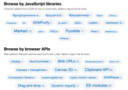

Simon Willison's Weblog
フィード

datasette-cluster-map 0.19
Simon Willison's Weblog
<p><strong>Release:</strong> <a href="https://github.com/simonw/datasette-cluster-map/releases/tag/0.19">datasette-cluster-map 0.19</a></p> <p>One of the oldest Datasette plugins, and still one of my favorites. It now works with Datasette 1.0a42, and depends on <a href="https://simonwillison.net/2026/Nov/13/datasette-leaflet/">the new datasette-leaflet</a> to ensure OpenStreetMap tiles are requested with a referrer header.</p><p>Here's <a href="https://datasette.io/global-power-plants/global-power-plants?owner=Pacific+Gas+%26+Electric+Co.">a map of power plants owned by California's PG&E</a>, also demonstrating Datasette's recently <a href="https://github.com/simonw/datasette/pull/3032">redesigned facets</a>:</p><p><img alt="Screenshot of a faceted map interface. Three facet panels at the top: "country_long 1" with United States of America 81 selected; "owner 1" with Pacific Gas & Electric Co. 81 selected; "primary_fuel 5" listing Hydro 63, Solar
16時間前

datasette-leaflet 0.3
Simon Willison's Weblog
<p><strong>Release:</strong> <a href="https://github.com/simonw/datasette-leaflet/releases/tag/0.3">datasette-leaflet 0.3</a></p> <p>OpenStreetMap have a very reasonable policy that hits to their hosted tile server <a href="https://wiki.openstreetmap.org/wiki/Referer">should send a referrer header</a>. Datasette table pages used the <code>Referrer-Policy: no-referrer</code> HTTP header, causing plugins that loaded tiles from OpenStreetMap to violate that policy.</p><p><code>datasette-leaflet</code> is the plugin that loads a bundled Leaflet so other Datasette plugins can depend on it. It now sets the referrer policy on the tile requests themselves to <code>strict-origin-when-cross-origin</code>, passing the host but not the full path to the page.</p> <p>Tags: <a href="https://simonwillison.net/tags/leaflet">leaflet</a>, <a href="https://simonwillison.net/tags/datasette">datasette</a>, <a href="https://simonwillison.net/tags/openstreetmap">openstreetmap</a></p>
17時間前

llm-gemini 0.37
Simon Willison's Weblog
<p><strong>Release:</strong> <a href="https://github.com/simonw/llm-gemini/releases/tag/0.37">llm-gemini 0.37</a></p> <p>Google launched <a href="https://blog.google/innovation-and-ai/models-and-research/gemini-models/introducing-gemini-4-hydrogen/">Gemini 4 Hydrogen</a> today - the lowest cost member of the Gemini 4 family.</p><p>It's actually not too far off the price of its much bigger siblings, Carbon and Argon. I'm finding Gemini 4's pricing <em>really</em> confusing. Here's the pricing scheme:</p><center><table> <thead> <tr> <th>Model</th> <th>Dates</th> <th>Input ($/M)</th> <th>Cached input</th> <th>Output</th> </tr> </thead> <tbody> <tr> <td rowspan="2">Gemini 4 Carbon</td> <td>Through Nov 30, 2026</td> <td>$2.00</td> <td>$0.10</td> <td>$10.00</td> </tr> <tr> <td>From Dec 1, 2026</td> <td>$4.00</td> <td>$0.20</td> <td>$20.00</td> </tr> <tr> <td rowspan="2">Gemini 4 Argon</td> <td>Through Nov 30, 2026</td> <td>$2.00</td> <td>$0.10</td> <td>$10.00</td> </tr> <tr> <td>From Dec 1,
2日前
Gemini Decisions API
Simon Willison's Weblog
<p><strong><a href="https://blog.google/innovation-and-ai/technology/developers-tools/gemini-decisions-api/">Gemini Decisions API</a></strong></p>Google join <a href="https://simonwillison.net/2026/Sep/21/jev/">Jev</a> and <a href="https://simonwillison.net/2026/Oct/6/llm-openai-decisions/">OpenAI</a> in the decision model category with "Gemini Decision 1". This new model API is almost identical to Jev: it supports the same three types of questions (yes/no, choice, and rubric-scoring) and even reuses Jev's term "Noul" for a yes/no question.</p><p>It's priced the same as the GPT-6 Luna decision model: 10 cents per million input tokens, and output is free. Jev remains the cheapest of the three, at 4.2 cents per million.</p><p>Jev is text (and JSON) only. OpenAI can handle text and images. Gemini Decision 1 is fully multi-model: it covers text, images, audio, video, and PDFs.</p><p>I tested it against video by passing these questions to it along with my <a href="https://simonwillison.net
3日前
aws-emulator
Simon Willison's Weblog
<p><strong><a href="https://github.com/aws/aws-emulator">aws-emulator</a></strong></p>Finally, an official emulator from AWS to run tests against a local clone of their many different services without having to provision a paid API key to do so.</p><p>It's written in Rust by a huge swarm of agents - 29,684 commits in the first three weeks of the project. Swaminathan (Swami) Sivasubramanian wrote about <a href="https://www.allthingsdistributed.com/2026/11/aws-emulator-and-the-engineers-job-when-agents-write-the-code.html">how it came to be</a> in a guest post on Werner Vogels' blog.</p><p>It currently requires Docker to run on macOS or Windows. I'm hoping they fix that in the future - it would be great if you could download a single binary and use that as part of a standard test suite in other languages and on other platforms. <p>Tags: <a href="https://simonwillison.net/tags/amazon">amazon</a>, <a href="https://simonwillison.net/tags/amazon-web-services">amazon-web-services</a>, <a hre
3日前

Browse tools.simonwillison.net by tag
Simon Willison's Weblog
<p><strong><a href="https://tools.simonwillison.net/#tags">Browse tools.simonwillison.net by tag</a></strong></p>I've been wanting a better way to browse my <a href="">collection of vibe-coded tools</a> (244 and counting) for a while. I had a few Fable 5.2 credits left over before my weekly reset so I set it to work using <a href="https://github.com/tree-sitter/py-tree-sitter">tree-sitter</a> to analyze the code for JavaScript APIs, libraries, and web API hosts used by each tool.</p><p>The homepage now features tag clouds for browsing by each of those categories of tag:</p><p><a href="https://tools.simonwillison.net/#tags"><img alt="Screenshot of two tag cloud sections where tags are sized by count. Browse by JavaScript libraries - Libraries loaded from a CDN by two or more tools. Select a tag to list its tools. @google/generative-ai 3, @jsquash/avif 3, @jsquash/webp 4, Babel 2, Chart.js 2, Cropper.js 2, D3 2, DOMPurify 7, js-yaml 3, JSZip 3, Leaflet 4, markdown-it 4, Marked 12, pako
3日前
llm 0.37.2
Simon Willison's Weblog
<p><strong>Release:</strong> <a href="https://github.com/simonw/llm/releases/tag/0.37.2">llm 0.37.2</a></p> <p>Fixes a security issue reported by <a href="https://github.com/BluePlexus">Daniel de Araujo</a> in <a href="https://github.com/simonw/llm/security/advisories/GHSA-v9h7-jj4g-f862">GHSA-v9h7-jj4g-f862</a> and <a href="https://github.com/simonw/llm/security/advisories/GHSA-r639-rr7r-x72w">GHSA-r639-rr7r-x72w</a>.</p><p>LLM has a mechanism called <a href="https://llm.datasette.io/en/stable/other-models.html#configure-an-openai-compatible-model">extra-openai-models.yaml</a> - now managed by the new-in-0.37 <a href="https://llm.datasette.io/en/stable/other-models.html#openai-endpoint-add">llm openai endpoint add</a> command - for using LLM with OpenAI-compatible API endpoints from other providers.</p><p>Daniel reported two ways this could accidentally send your configured OpenAI API key to one of those providers: if the key named by <code>api_key_name</code> had never been stored,
3日前
Anthropic's IPO roadshow video 1
1
Simon Willison's Weblog
<p><strong><a href="https://ipo.anthropic.com/us/#roadshow-video">Anthropic's IPO roadshow video</a></strong></p>Anthropic kicked off their IPO roadshow yesterday, and their roadshow video has some previously unreleased information about how their business works.</p><p>The section on "Approach to compute" with co-founder Tom Brown is particularly interesting, describing how Anthropic train and serve Claude across AWS Trainium, Google TPUs, NVIDIA GPUs, and AMD GPUs.</p><p>I'm not sure why there's no official video transcript, but here's <a href="https://gist.github.com/simonw/9806757fe8acec6221cb0a5cce4d720d">one that I extracted</a> using MacWhisper. Highlights below:</p><blockquote><p>We train and serve Claude now across all four major chip families. That's only possible because early on we made an unconventional bet on a multi-chip strategy. At the time, many people thought that running AI models on different chips wasn't worth the effort. Each chip needs its own tailored soft
3日前

llm-gemini 0.36
Simon Willison's Weblog
<p><strong>Release:</strong> <a href="https://github.com/simonw/llm-gemini/releases/tag/0.36">llm-gemini 0.36</a></p> <p>Gemini 4 Carbon was announced <a href="https://blog.google/innovation-and-ai/models-and-research/gemini-models/introducing-gemini-4-carbon/">two weeks ago</a> for "a subset of cyber defenders", but today it's <a href="https://blog.google/innovation-and-ai/models-and-research/gemini-models/gemini-4-carbon-now-available/">available to everyone else</a>.</p><p>This is Google's best ever Gemini, priced at $2/million input and $10/million output at launch (that's GPT-6.1 Sol / Claude Sonnet 5.5 prices) but scheduled to double in price to $4/$20 on December 1st (same as Opus 5.5).</p><p>Here are <a href="https://tools.simonwillison.net/markdown-svg-renderer?url=https%3A%2F%2Fgist.github.com%2Fsimonw%2Fe5bf860633fc12e8f926f305c4c3190c">three pelicans</a> for the low, medium and high thinking efforts (it defaults to medium). This is the pelican I got for high:</p><p><img al
4日前
Introducing Our Smallest, Most Efficient Model: Muse Ember
Simon Willison's Weblog
<p><strong><a href="https://research.meta.ai/blog/muse-ember">Introducing Our Smallest, Most Efficient Model: Muse Ember</a></strong></p>Meta AI just launched their entry in the Claude Haiku/GPT Luna category: Muse Ember, which they describe as:</p><blockquote><p>[...] our smallest and most efficient model designed for complex reasoning execution and the work agents repeat all day: tool calls, coding subtasks, routing, extraction, and long document parsing.</p></blockquote><p>For shorter prompts it's priced the same as GPT-6 Luna and Claude Haiku 5.5 - both are $0.10/million input tokens and $0.50/million output. Today's other big model release, Claude Fable 5.2, is <em>80x that price</em> at $8/$40.</p><p>The pricing is a little less straightforward as prompts get longer, though. Luna, Ember, and Haiku all support up to a million input tokens, but they also all have a threshold after which the price goes up. Taking <em>that</em> threshold into account Ember is priced between the two
4日前
Quoting Prompting Claude Fable 5.2
Simon Willison's Weblog
<blockquote cite="https://platform.claude.com/docs/en/build-with-claude/prompt-engineering/prompting-claude-fable-5-2#say-who-owns-the-code"><p>Claude Fable 5.2 pays close attention to who owns the code it works on. In Anthropic’s testing on small coding tasks, the model tended to add to the existing structure when the prompt said nothing about ownership or presented the code base as someone else’s, even when that duplicated existing code. When the prompt said the code base was the model’s own, it often consolidated duplicated code and sometimes made related fixes without being asked.</p><p>If you want the model to improve the structure as it works, say that the code is its own:</p><blockquote><p><code>You are the owner and long-term maintainer of this codebase, and its design is up to you.</code></p></blockquote><p>The ownership sentence makes the model much more likely to consolidate duplicated code into one shared function. In Anthropic’s testing on small coding tasks, the model co
4日前
Yonkers Rises
Simon Willison's Weblog
<p><strong>Tool:</strong> <a href="https://tools.simonwillison.net/yonkers-rises">Yonkers Rises</a></p> <p>I realized I didn't know where Yonkers was, so I looked it up on Google Maps and then, to help embed its location and shape in my head (and to try out Claude Fable 5.2's 3D modeling and animation skills), I <a href="https://claude.ai/share/97443910-2e0a-4e17-9b9e-11d14d8ff65c">prompted Fable 5.2 Medium</a> to:</p><blockquote><p><code>Make a three js animation where yonkers stands up as a big mech (cool stand up motion) and átomos around manhattan and queens and Brooklyn, use openstreetmap mapping data</code></p></blockquote><p>It correctly deduced that "átomos" was a mobile keyboard typo for "stomps":</p><video controls playsinline preload="none" width="572" height="360" poster="https://static.simonwillison.net/static/2026/yonkers.webp"> <source src="https://static.simonwillison.net/static/2026/yonkers-large.mp4" type="video/mp4"></video> <p>Tags: <a href="https://simonwillison.n
4日前

llm-anthropic 0.31
Simon Willison's Weblog
<p><strong>Release:</strong> <a href="https://github.com/simonw/llm-anthropic/releases/tag/0.31">llm-anthropic 0.31</a></p> <p>Anthropic <a href="https://www.anthropic.com/claude-fable-and-mythos-5-2">released Fable 5.2 and Mythos 5.2</a> today. Fable 5.2 is currently <a href="https://artificialanalysis.ai/models/claude-fable-5-2">ranked first on Artificial Analysis</a>. Anthropic say it "solved two open problems in the physics of black holes", so clearly their internal benchmarks have become more ambitious!</p><p>I've added the new models to <code>llm-anthropic</code>, so you can now run prompts through Fable 5.2 like this:</p><pre><code>uv tool install llmllm install llm-anthropicllm keys set anthropic# paste key herellm -m claude-fable-5.2 "Generate an SVG of a pelican riding a bicycle"</code></pre><p>I ran pelicans at all five reasoning levels - <code>low</code>, <code>medium</code>, <code>high</code>, <code>xhigh</code>, and <code>max</code>. You can <a href="https://tools.simonw
5日前
Locating the source of a mysterious beep with Claude
Simon Willison's Weblog
<p>Our house has a box room, full of boxes that we still haven't unpacked from our last move. A couple of weeks ago something in that room started <em>intermittently beeping</em>. The beeps were far enough apart that standing in the room and trying to determine the source of the noise was frustrating, and I really didn't want to dig through every one of those boxes. So I had Claude Code build <a href="https://github.com/simonw/beep-locator">Beep Locator</a>, a software system for triangulating the source of a mysterious beep using multiple devices scattered around the room.</p><p>Here's what Beep Locator looks like after it has been running for a while:</p><p><img src="https://static.simonwillison.net/static/2026/beep-locator-ui.webp" alt="Screenshot of a web app that uses several phones, tablets and laptops as microphones to locate a mystery beeping sound in a room. The left column has an "Add a listener" panel with a QR code and join link, a "Controls" panel with
5日前
The Web Is More Than Enough, by Paul Ford
Simon Willison's Weblog
<p><a href="https://news.ycombinator.com/item?id=50416456#50421091">My comment</a> on <a href="https://news.ycombinator.com/item?id=50416456">The Web Is More Than Enough, by Paul Ford</a> — Hacker News.</p><p>OK, this comment convinced me to give that a shot.</p><p>Here's a thing I made in Three.js this morning - a Nudibranch themed Faberge Egg: <a href="https://static.simonwillison.net/static/2026/Hidden-Reef-Egg-threejs.html">https://static.simonwillison.net/static/2026/Hidden-Reef-Egg...</a> (77KB)</p><p>I just asked Claude (Opus 5.5 Medium running in regular Claude Chat) to port that to Vanilla JS, in the same thread where it had built it, and got this: <a href="https://static.simonwillison.net/static/2026/Hidden-Reef-Egg-Vanilla-WebGL.html">https://static.simonwillison.net/static/2026/Hidden-Reef-Egg...</a> (98KB)</p><p>They aren't identical - you can see what Claude said about that in the transcript (I don't fully understand why it differed): <a href="https://claude.ai/sha
5日前

Hide your slop PR descriptions behind <details><summary> 34
Simon Willison's Weblog
<p>Most of the changes I make to my projects these days come in the form of PRs opened for me by Claude Code or Codex. The PR is my unit of work - I use them to bundle commits together, iterating on them until a feature is complete, document decisions and then merge the finished result. Today's coding agents are great at writing PR descriptions.</p><h4 id="they-re-too-good-at-describing-the-work">They're too good at describing the work</h4><p>The problem is that they are <em>too</em> good. An agent-written PR description is accurate and comprehensive. It describes the problem, the detailed solution, and the steps taken to verify it. That's a lot of information to absorb.</p><p>It's not necessarily slop, but it <em>reads</em> like slop!</p><p>It's very easy to spot an AI-written PR, and as with other forms of AI writing my instant reaction is best summarized as "I'm not reading all of that". It doesn't matter how accurate or useful the information is, I'm instantly put off by the thoug
5日前
parse_number() as a SQLite extension: C vs Rust
Simon Willison's Weblog
<p><strong>Research:</strong> <a href="https://github.com/simonw/research/tree/main/sqlite-parse-number-c-vs-rust#readme">parse_number() as a SQLite extension: C vs Rust</a></p> <p>I was out walking the dog when I got curious about how easy/difficult it would be to write a SQLite C extension that adds a <code>parse_number()</code> function for turning strings like <code>-$1,234.56</code> or <code>'12.5%'</code> into numeric values that could be summed and sorted.</p><p>I fired up regular Claude chat (Opus 5.5) <a href="https://claude.ai/share/7f18f157-6c96-4d49-a1d4-f02403e3b261">and prompted</a>:</p><blockquote><p><code>I'm thinking about a SQLite custom function 'parse_number(value)' that strips ',', '$', '£' and '%', handles a leading '-', and returns 'NULL' for anything it can’t parse</code></p><p><code>Explore the difference between building this as a SQLite extension in C v.s. in Rust - I want to compare performance and code complexity and size of the resulting</code>.so<code>(o
6日前
datasette #3046: Don't serve link: rel=next HTTP headers to Firefox for HTML pages
Simon Willison's Weblog
<p><strong><a href="https://github.com/simonw/datasette/issues/3046">datasette #3046: Don't serve link: rel=next HTTP headers to Firefox for HTML pages</a></strong></p>I was looking at the Firefox network panel today when I noticed that requests to a Datasette table page were triggering an <a href="https://developer.mozilla.org/en-US/docs/Glossary/Prefetch">HTTP prefetch</a> to the next page of rows in that table.</p><p>This was happening because Datasette pages serve an HTTP <code>link</code> header like this:</p><p><code>link: <https://latest.datasette.io/fixtures/compound_three_primary_keys?_next=a%2Cd%2Cv>; rel="next"</code></p><p>This is bad. A tiny fraction of the visitors to one of those pages will click the "next" link, which means for everyone else their browser is fetching unnecessary data and the Datasette server is having to render an entire page that then gets thrown away.</p><p>I dug in and learned that Firefox has <a href="https://bugzilla.mozilla.org/show_bu
7日前
Terry Pratchett's Study
Simon Willison's Weblog
<p><a href="https://news.ycombinator.com/item?id=50405674#50407316">My comment</a> on <a href="https://news.ycombinator.com/item?id=50405674">Terry Pratchett's Study</a> — Hacker News.</p><p>Terry Pratchett once wrote about the concept of "horizontal wealth". Vertical wealth is where you spend money on rich people stuff - yachts and suchlike. Horizontal wealth is where you spend more money on the things you liked before you got rich: <a href="https://chibuikeani.blogspot.com/2017/02/the-price-of-happiness-horizontal-vs.html">https://chibuikeani.blogspot.com/2017/02/the-price-of-happin...</a></p><blockquote><p>But horizontal wealth means not letting your increased income dictate your tastes. You like books and now you have money? Buy more books! Change those catenary bookshelves for good hardwood ones! In my case, build a library extension to your office. And, of course, you buy what will be useful for that most wonderful of pursuits, blind research, which is research withou
7日前
Quoting Nilay Patel
Simon Willison's Weblog
<blockquote cite="https://www.youtube.com/watch?v=-U4thshDTL8&t=422s"><p>The products aren't good enough to sell people on the costs.</p><p>You cannot tell people that you have to listen to the whine of a data center in their backyard for AI overviews and some of the most hilarious deep fake slop in history.</p><p>It's not worth it. It just isn't worth it to anyone. And agents aren't real and they might not be being used the way that anyone wants them to yet. All these companies are spending more than they're making on these products. Refrigerators holding blood storage in Europe are being hacked.</p><p>The costs are too high. The benefits are not real. And if you connect that to corruption, you're like, in order to impose these costs on me, these CEOs are in the White House shaking Trump's hand, renaming it to the Gulf of America, paying for this ballroom that we don't want. It's obvious crypto-corruption, and it's still slop. </p><p>The AI industry will not get out of it until t
8日前
Quoting Paul Ford
Simon Willison's Weblog
<blockquote cite="https://ftrain.com/aboard-the-web-is-more-than-enough"><p>The web browser is very, very, very powerful software for applications, <em>and the cost of accessing that power is going down seemingly every day</em>.</p></blockquote><p class="cite">— <a href="https://ftrain.com/aboard-the-web-is-more-than-enough">Paul Ford</a>, The Web Is More Than Enough</p> <p>Tags: <a href="https://simonwillison.net/tags/browsers">browsers</a>, <a href="https://simonwillison.net/tags/paul-ford">paul-ford</a>, <a href="https://simonwillison.net/tags/web-development">web-development</a></p>
9日前
datasette-llm 0.1a10
Simon Willison's Weblog
<p><strong>Release:</strong> <a href="https://github.com/datasette/datasette-llm/releases/tag/0.1a10">datasette-llm 0.1a10</a></p> <p>Fixes a <a href="https://github.com/datasette/datasette-llm/pull/11">bug</a> that affected my <a href="https://agent.datasette.io/">agent.datasette.io</a> demo site, where the set of available LLM models was not correctly restricted to just those in the configuration.</p> <p>Tags: <a href="https://simonwillison.net/tags/llm">llm</a>, <a href="https://simonwillison.net/tags/datasette">datasette</a></p>
10日前
datasette-apps 0.3a0
Simon Willison's Weblog
<p><strong>Release:</strong> <a href="https://github.com/datasette/datasette-apps/releases/tag/0.3a0">datasette-apps 0.3a0</a></p> <p>Datasette Apps adds support for hosting and editing custom HTML applications inside of Datasette.</p><p>These can be created by hand, but it's easier to create them using LLMs via <a href="https://agent.datasette.io/">Datasette Agent</a>. This release improves that integration:</p><blockquote><ul><li>Apps can now be tagged in Datasette Agent chat messages by typing <code>#</code>, which autocompletes from the apps the user has permission to view.</li><li>New <code>app_add_stored_queries()</code> and <code>app_remove_stored_queries()</code> tools let the agent manage which stored queries an app is allowed to call. Granting a write query requires approval from the user first.</li><li><code>app_create()</code> now checks that each requested stored query exists and that the user can view it, and asks the user to approve any write queries before the app is c
11日前
datasette-agent 0.5a0
Simon Willison's Weblog
<p><strong>Release:</strong> <a href="https://github.com/datasette/datasette-agent/releases/tag/0.5a0">datasette-agent 0.5a0</a></p> <p>This is a significant release of <a href="https://agent.datasette.io/">Datasette Agent</a>. The most notable new feature is called the <strong>panel</strong> - it lets the agent chat open and then sit next to pages from Datasette, for example a table or query page.</p><p>When combined with <a href="https://github.com/datasette/datasette-apps">datasette-apps</a> this means you can prompt a database-backed app into existence and then modify it from the chat that sits next to that app.</p><p><img alt="Screenshot of a split-screen chat interface titled "evaluate llm prices" (model tag "gpt-6-luna"): the conversation runs in a narrow column on the left, and a wide side panel on the right displays the app the assistant built, with "EXPORT" and "Close panel" buttons above it. In the chat, blue user bubbles read "B
11日前
llm 0.37.1
Simon Willison's Weblog
<p><strong>Release:</strong> <a href="https://github.com/simonw/llm/releases/tag/0.37.1">llm 0.37.1</a></p> <p>A bugfix release for <a href="https://llm.datasette.io/">LLM</a>, with contributions from <a href="https://github.com/remote-controlled-man">Steven Huang</a>, <a href="https://github.com/tao-hpu">Tao An</a>, <a href="https://github.com/ar-jan">Arjan Mossel</a>, and <a href="https://github.com/XXXXXQ-0206">XQ</a>.</p> <p>Tags: <a href="https://simonwillison.net/tags/llm">llm</a></p>
11日前
AI is destroying my CS degree
Simon Willison's Weblog
<p><a href="https://news.ycombinator.com/item?id=50353300#50354278">My comment</a> on <a href="https://news.ycombinator.com/item?id=50353300">AI is destroying my CS degree</a> — Hacker News.</p><p>I don't envy educators right now.</p><p>AI clearly means you need to change how you teach and evaluate students. We are only a few years in though, and it's still extremely unclear what effective teaching with these tools looks like.</p><p>The worst part is that the evaluation loop is measured in multiple years! If you start trying some new education mechanism today you won't get a robust idea of how well it works until your current cohort graduate in 3-6 years time.</p><p>Students effectively all become guinea pigs for untested new ways of learning and teaching.</p> <p>Tags: <a href="https://simonwillison.net/tags/ai-ethics">ai-ethics</a>, <a href="https://simonwillison.net/tags/hacker-news">hacker-news</a>, <a href="https://simonwillison.net/tags/education">education</a>, <a href="ht
11日前
Qwen 3.8 27B on my laptop can interpret model weights, too
Simon Willison's Weblog
<p>Yesterday's hot paper was <a href="https://rikiyat.github.io/blog/weight-space-programming/">Sparks of Weight-Space Programming: LLMs can natively read & write neural network weights</a> by Rikiya Takehi, Jayden Teoh, Alex Zhang, and Omar Khattab. The paper (OK, the authors classify is as a "blog post", but it's paper-shaped) found that frontier models, in particular GPT-6 Astra, can both interpret and modify the raw weights of a machine learning model - literally a text description of the model containing a bunch of floating point numbers. I've been playing with one of the examples from the paper and I'm delighted to share that Qwen 3.8 27B running on my laptop can do this as well!</p><h4 id="weight-space-programming">Weight-Space Programming</h4><p>Here's the highlight from their abstract, describing impressive capabilities for GPT-6 Astra and coining the term <strong>Weight-Space Programming</strong> for when LLMs analyze and modify model weights:</p><blockquote><p>Just by l
11日前
I discovered a sound that leaks your exact location (and it's everywhere) - YouTube
Simon Willison's Weblog
<p><strong><a href="https://www.youtube.com/watch?v=UytYrhYLOKI">I discovered a sound that leaks your exact location (and it's everywhere) - YouTube</a></strong></p>Genius piece of OSINT by Colsto, who demonstrates how you can take almost imperceptible background noise of planes from a video soundtrack, figure out their Doppler curves, then cross reference them against ADS-B data to find the exact location of the video based on their speed, distance, and gaps between different flights.</p><p><lite-youtube videoid="UytYrhYLOKI" js-api="js-api" title="I discovered a sound that leaks your exact location (and it's everywhere)" playlabel="Play: I discovered a sound that leaks your exact location (and it's everywhere)"> </lite-youtube> <p><small></small>Via <a href="https://lobste.rs/s/s1btqo/this_background_sound_leaks_your_exact">Lobste.rs</a></small></p> <p>Tags: <a href="https://simonwillison.net/tags/privacy">privacy</a>, <a href="https://simonwillison.net/tags/youtube">youtube</a
11日前
October sponsors-only newsletter
Simon Willison's Weblog
<p>I sent out the October edition of my <a href="https://github.com/sponsors/simonw/">sponsors-only monthly newsletter</a>. If you are a sponsor (or start a sponsorship now) you can <a href="https://github.com/simonw-private/monthly/blob/main/2026-10-october.md">access it here</a>. This month:</p><ul><li>The October inflection point for vibe game development</li><li>The vulnerability apocalypse gets hot</li><li>LLM releases</li><li>API credits for $100+/month subscriptions</li><li>What I'm using right now</li><li>My software releases</li></ul><p>My September newsletter <a href="https://simonwillison.net/newsletters/monthly-2026-09-september/">can now be seen here</a>, as a preview of what you'll get. Pay $10/month to stay a month ahead of the free copy!</p> <p>Tags: <a href="https://simonwillison.net/tags/newsletter">newsletter</a></p>
11日前
llm 0.37
Simon Willison's Weblog
<p><strong>Release:</strong> <a href="https://github.com/simonw/llm/releases/tag/0.37">llm 0.37</a></p> <p>There's a <em>lot</em> of stuff in this new release of my LLM CLI tool and Python library, representing around two months of accumulated features and fixes.</p><p>I added <code>gpt-6.1-sol</code> and <code>gpt-6.1-terra</code>, plus a new <a href="https://llm.datasette.io/en/stable/other-models.html#configure-an-openai-compatible-model">llm openai endpoint add</a> command to make it easier to configure additional models that use OpenAI-compatible endpoints.</p><p>I switched the default model (if you have not set your own default) to <code>gpt-6-luna</code> - half the price of the previous default, <code>gpt-5.6-luna</code>.</p><p>LLM's support for embeddings now accepts that different binary content may have different content-type - necessary for models like <a href="https://deepmind.google/models/gemini/embedding/">Gemini Embedding 2</a>, which can embed text, audio, images, and
12日前